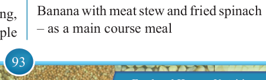
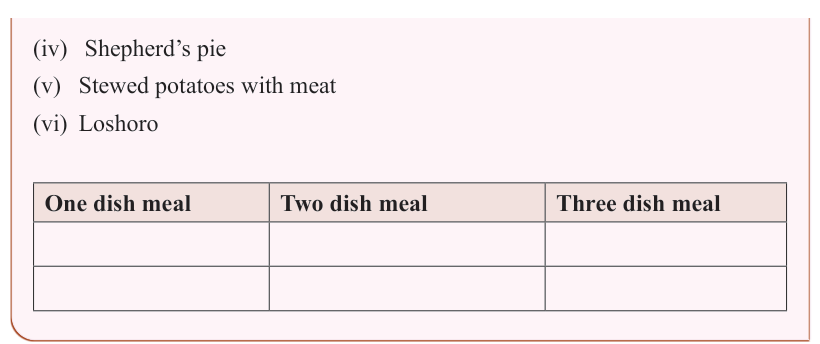

93


Food and Human Nutrition

Form Two

(iv) Shepherd’s pie
(v) Stewed potatoes with meat
(vi) Loshoro
One dish meal
Two dish meal
Three dish meal
A course meal refers to a single food item or a set of dishes served in a structured sequence. Typical courses include an appetiser, main course and dessert.
(i)
An appetiser or starter is the
first-course
meal
composed
of dishes that stimulate the appetite. It is served before the main course meal. Examples of appetiser dishes include soup, vegetable salad, cocktail and hors d’oeuvres.
(ii) The main course meal is the main meal. Usually, it comprises at least a protein dish, a carbohydrate dish, mineral and a vitamin dish. Examples of main course meals are roasted chicken with potatoes and fried spinach.
(iii) A dessert is the last course meal, which contains sweet dishes served after the main course. Examples include fruit salad, steamed jam pudding, fruit crumble, cakes, pineapple
upside-down pudding, ice cream and banana fool.
Categories of course meals
Course meals are generally categorised as one-course, two-course and three course meals.
A one-course meal: It consists of a single dish that provides a balance of essential nutrients
including
carbohydrates,
proteins, vitamins, and minerals. It contains only the main course meal, also known as entree. This meal contains neither appetisers nor desserts.
A two-course meal: It contains either an appetiser and the main course meal or the main course meal and dessert.
An example of a two-course meal is as shown below.
1st – course:
Fish soup – as a starter or appetiser
2nd – course meal:
Banana with meat stew and fried spinach
– as a main course meal
17/09/2025 16:30